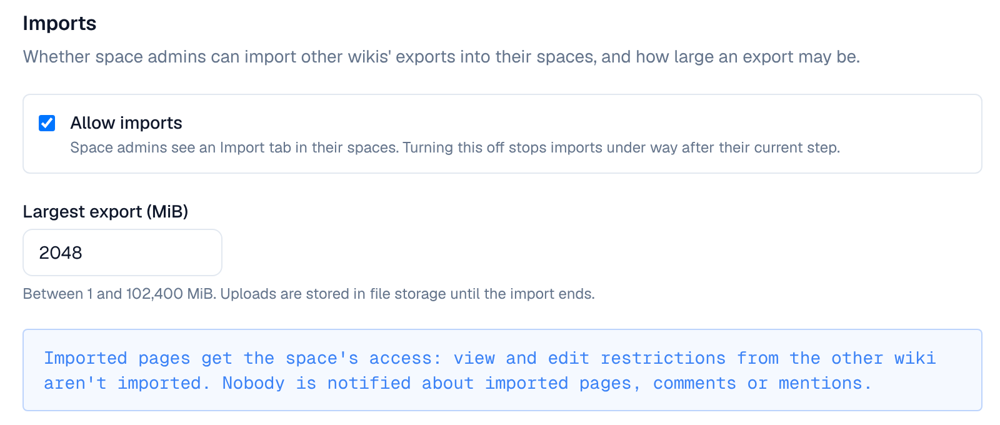
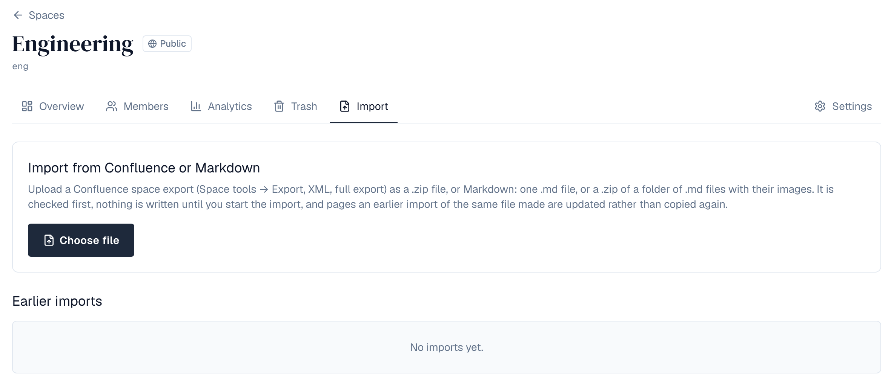

Space admins can bring pages into their space from a Confluence space export or from Markdown files. Administrators decide whether imports are allowed and how large an export may be. How a space admin runs an import is in the user guide's Import & export.
1. Settings

Settings → Security → Imports (settings:write):
| Setting | Default | Effect |
|---|---|---|
| Allow imports | On | Space admins see an Import tab in their spaces. Turning it off also stops imports under way after their current step |
| Largest export (MiB) | 2,048 | Between 1 and 102,400. The upload is kept in file storage until the import ends, so make sure storage has room |
Changing them raises the import_settings.update event and is audited.
2. What can be imported

| Source | What comes in |
|---|---|
| Confluence space export (Space tools → Export, XML, full export, a .zip) | Pages with their tree, versions with dates and authors, comments, labels, blog posts (as posts on the space's blog, or under a page you name), and images and videos as attachments. Common macros become Wiki blocks; others become a plain-text block a plugin may convert |
| Markdown: one .md file, or a .zip of a folder | Each folder becomes a page holding its files' pages (index.md or README.md is the folder's text); titles from front matter or the first heading; tags become labels; images in the upload become attachments |
- Every import is checked first (a dry run with a report) and writes nothing until the space admin starts it.
- Authors are matched to accounts by email; others keep the name the export gave.
- Importing the same export again updates the pages the earlier import made, and leaves pages edited in the Wiki since as they are.
- Uploads resume after a dropped connection. Imports run in the background, one step at a time, on any server.
3. What isn't imported
- View and edit restrictions: imported pages get the space's access.
- Attachments other than images and videos.
- Notifications: nobody is told about imported pages, comments or mentions.
- Other formats than Confluence XML exports and Markdown.
4. Limits
| Limit | Value |
|---|---|
| Export size | The Largest export setting |
| Markdown | 1 MiB per file, 20,000 pages, 200,000 entries in a .zip |
| A check | 30 minutes |
| Failed steps | An import that fails 5 steps in a row stops |
| Waiting | An unfinished upload is cancelled after a day; a checked import not started within 7 days |
Starting an import raises space.import.start, which a policy can refuse; space.import.complete follows when it ends. Both are in the audit log.